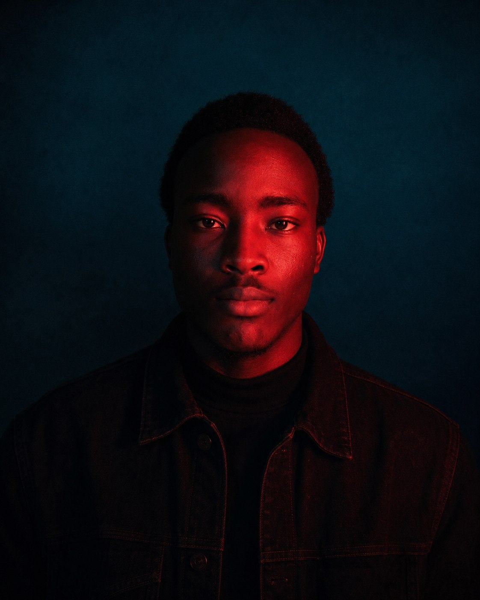
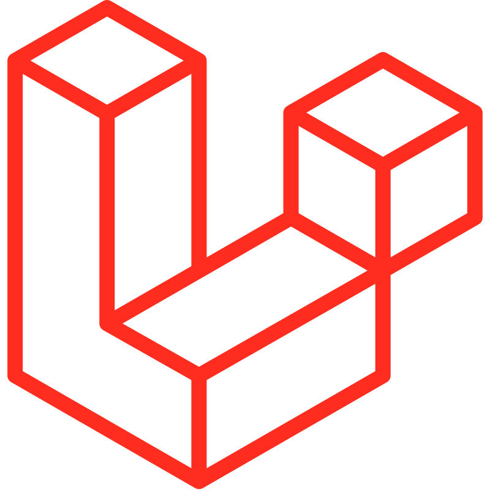
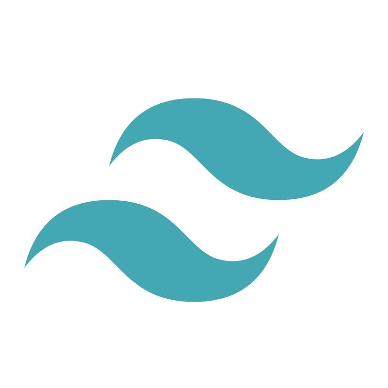
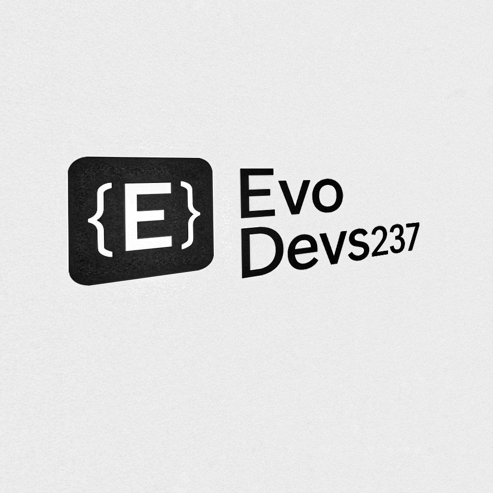
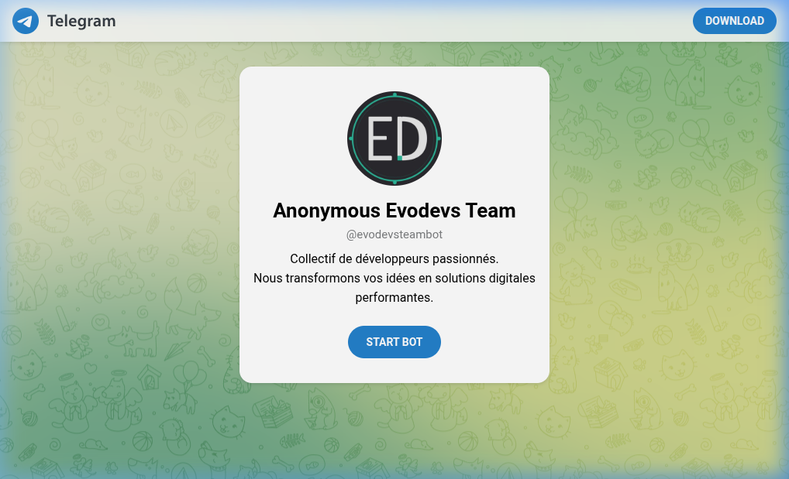
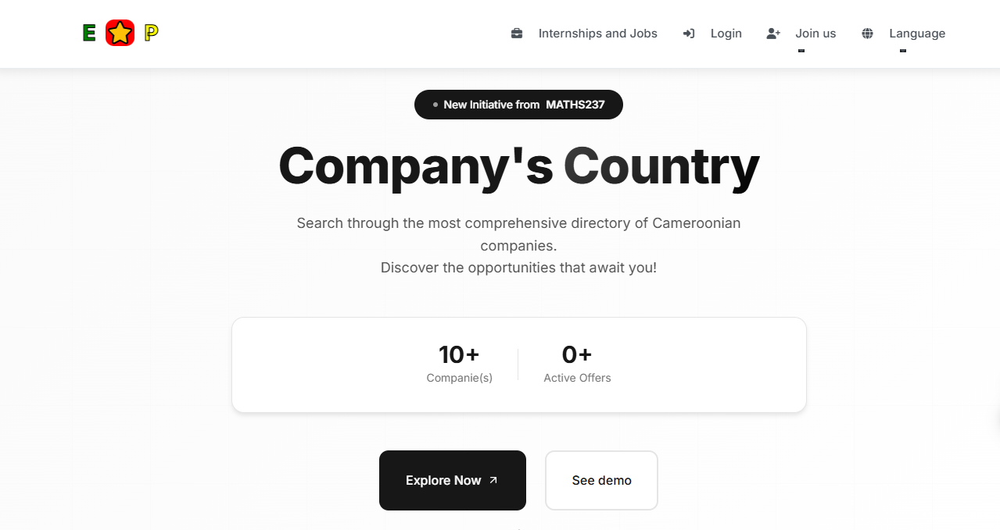
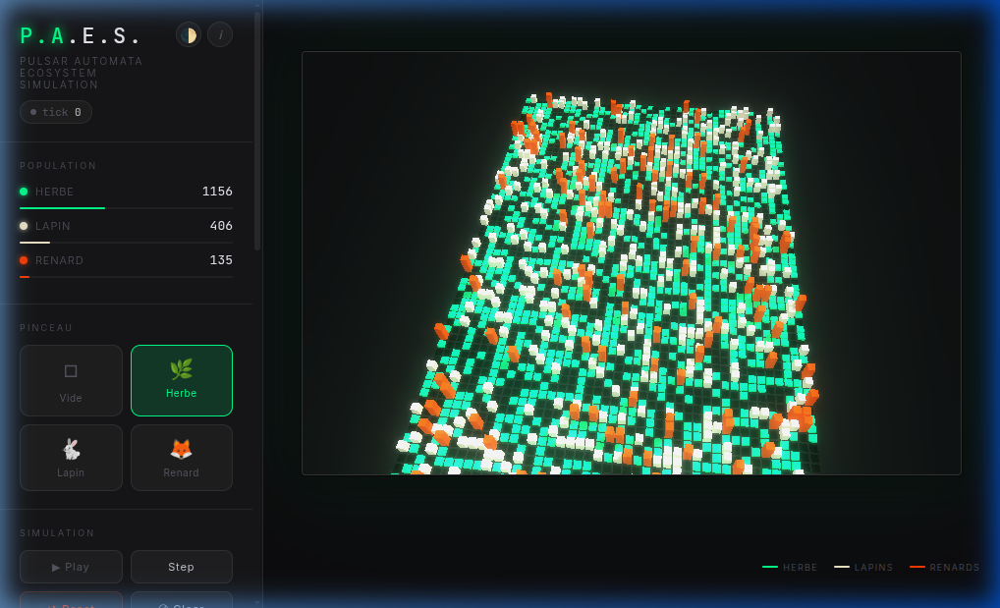
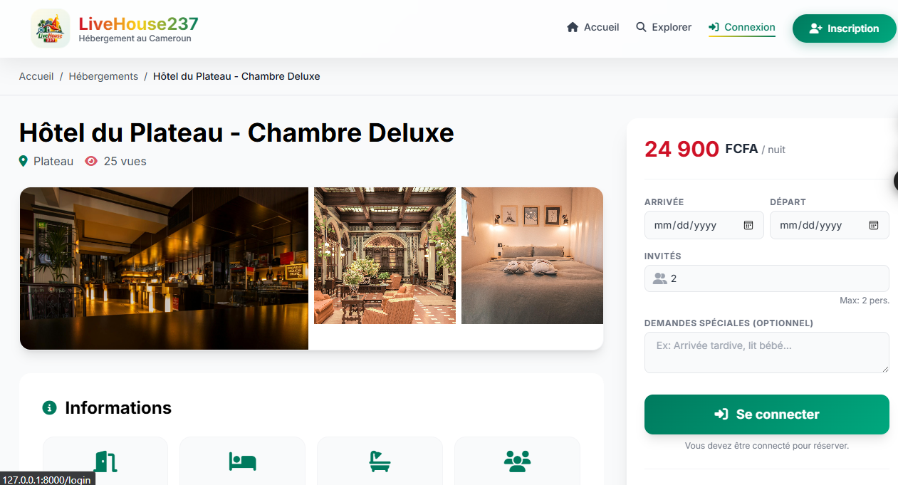

Software engineer / Yaoundé, CM
ouvert aux collaborations
Des produits
calmes dans
un monde rapide.
Je conçois et développe des outils numériques qui donnent envie de revenir : plateformes web, expériences mobiles et systèmes bien pensés.

& produit✳
/ ce que je crois
/ outils & matières
Des idées aux interfaces,avec les bons outils.

LaravelNode.jsFlutter FirebaseMySQL
FirebaseMySQL
Tailwind GitHubLaravelNode.jsFlutter
GitHubLaravelNode.jsFlutter01 / projets sélectionnés
Travail
récent.
Des produits qui vont du commerce conversationnel à la visualisation scientifique, en passant par l'hébergement et la découverte des entreprises.


01STORE / TELEGRAM↗
Agence digitale / catalogue
Evodev Store
Une vitrine commerciale claire pour vendre des sites, des mini-apps Telegram, des identités et de l'automatisation.
↗
02DIRECTORY / JOBSAnnuaire / opportunités
Entreprise
du Pays
Explorer les entreprises camerounaises et les opportunités qui émergent autour d'elles.
↗
033D / AUTOMATAVisualisation / Three.js
Pulse Automata
Une simulation vivante d'écosystème proie-prédateur, rendue en temps réel dans le navigateur.
↗
04STAY / BOOKINGAccommodation / réservation
Accommodation / LiveHouse237
Le projet Accommodation derrière LiveHouse237 : découvrir et réserver des hébergements dans un contexte local.
↗02 / profil
Faire simple
demande du travail.
Je préfère une solution juste à une solution spectaculaire. Le détail compte, surtout quand personne ne le remarque.
Je suis ingénieur logiciel full-stack et je travaille sur des produits qui doivent être compris, utilisés et maintenus par de vraies personnes.
Mon terrain de jeu va du backend Laravel et Node.js aux interfaces JavaScript et aux apps Flutter. Je m'intéresse aussi à ce qui entoure le code : les usages, la clarté, la documentation et la transmission.
Télécharger mon CV ↓03 / contact
Un bon projet
commence ici.
Une mission, une idée à clarifier ou une question technique : ma boîte mail est ouverte.
calebyangcyd@gmail.com ↗